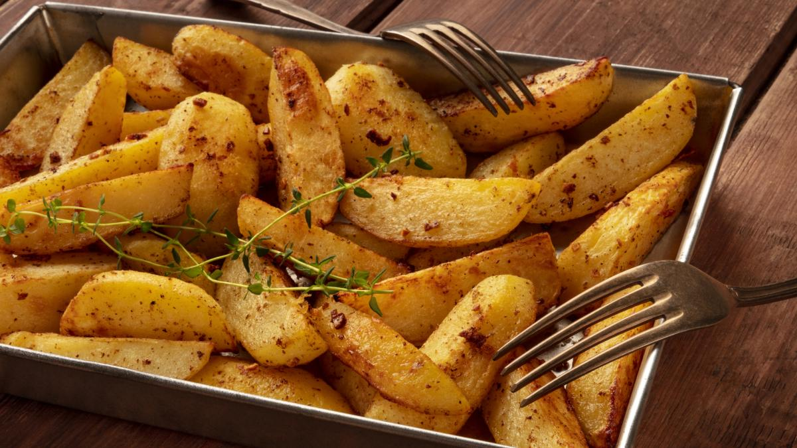
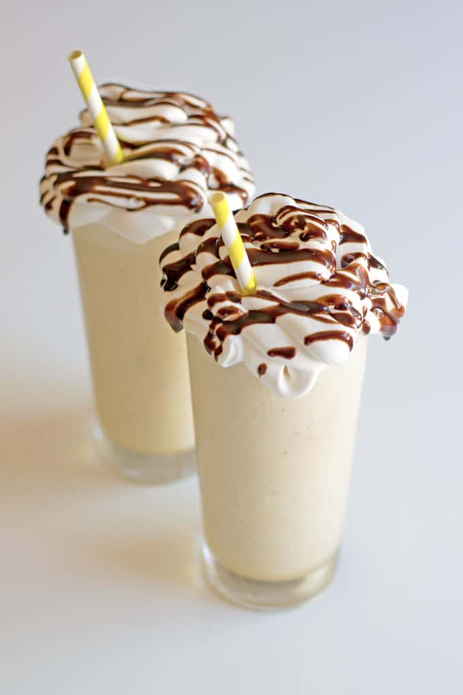
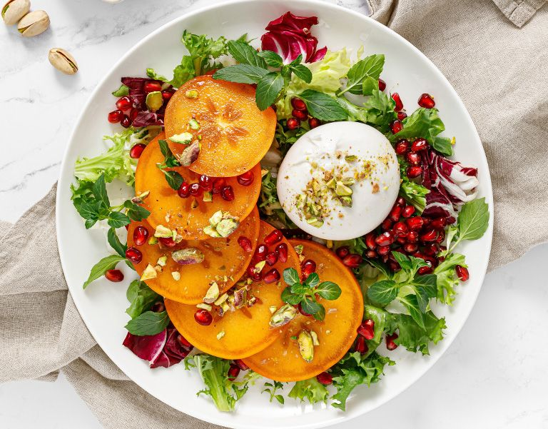
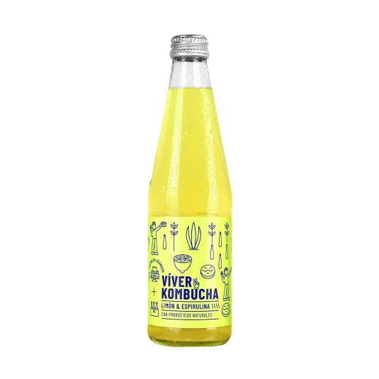

En ValdeBurger, nos esforzamos por ofrecer opciones deliciosas para todos nuestros clientes, incluidos aquellos que siguen una dieta libre de gluten. A continuación, presentamos algunos de nuestros productos sin gluten que puedes disfrutar sin preocupaciones:
Hamburguesa Clásica sin Gluten

Nuestra deliciosa hamburguesa clásica sin gluten, servida con lechuga, tomate, cebolla y tu elección de aderezos sin gluten.
Papas Fritas sin Gluten
Nuestras crujientes papas fritas sin gluten, sazonadas a la perfección y acompañadas de tu salsa favorita, todas libres de gluten.
Batido de Vainilla sin Gluten
Refrescante y delicioso batido de vainilla sin gluten, preparado con ingredientes de alta calidad y sin gluten añadido.
Ensalada de Pollo sin Gluten
Nuestra fresca ensalada de pollo sin gluten, con vegetales frescos y aderezo sin gluten, perfecta como opción ligera y saludable.
Refresco sin Gluten
Refrescante bebida sin gluten, disponible en una variedad de sabores para acompañar tu comida sin preocupaciones.